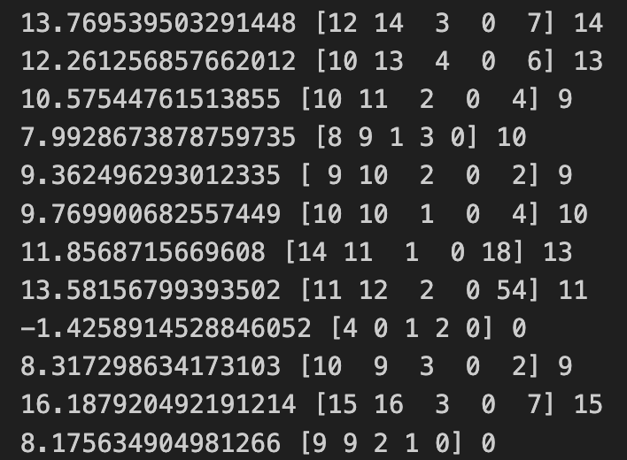
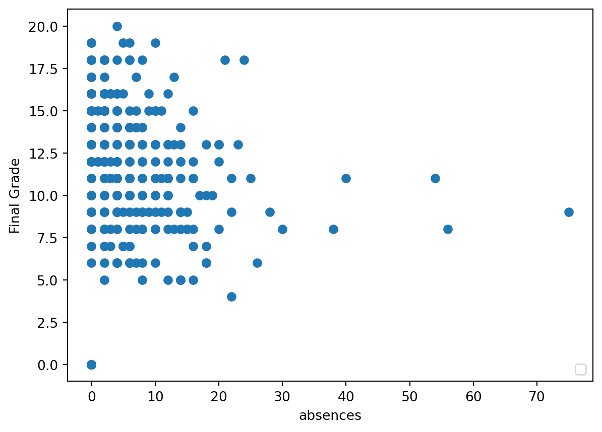

import pandas as pd
import numpy as np
import sklearn
from sklearn import linear_model
from sklearn.utils import shuffle
import matplotlib.pyplot as plt
from matplotlib import style
import pickleIn this plot, we will apply the linear regression algorithm to predict the final grades of high school students in a math class based on various attributes. The data used for this analysis is extracted from the Student Performance dataset available at the UCI Machine Learning Repository
Importing Modules/Packages
Before diving into coding, we import the required modules and packages:
Loading in Our Data
Next, we load the dataset and display the first 5 students using the \(.head()\) function
data =pd.read_csv("/Users/ella.yang/Desktop/ds499/hsin-yu-yang.github.io/data/student_mat.csv", sep=";")
#print(data.head())Trimming Our Data
Considering the relevance of attributes, we select the ones we want to use, resulting in a data frame with information related to only 6 attributes:
data = data[["G1", "G2", "G3", "studytime", "failures", "absences"]]
#Compare to the original data
print(data.head()) G1 G2 G3 studytime failures absences
0 5 6 6 2 0 6
1 5 5 6 2 0 4
2 7 8 10 2 3 10
3 15 14 15 3 0 2
4 6 10 10 2 0 4Separating Our Data
Now that we’ve trimmed our data set down we need to separate it into 4 arrays. However, before we can do that we need to define what attribute we are trying to predict. This attribute is known as a label. The other attributes that will determine our label are known as features. Once we’ve done this we will use numpy to create two arrays. One that contains all of our features and one that contains our labels
predict = "G3"
X = np.array(data.drop(columns=[predict])) # return new dataset without G3
y = np.array(data[predict])After this we need to split our data into testing and training data. We will use 90% of our data to train and the other 10% to test. The reason we do this is so that we do not test our model on data that it has already seen.
x_train, x_test, y_train, y_test = sklearn.model_selection.train_test_split(X, y, test_size = 0.1)We are ready to implement the linear regression algorithm
How Does it Work?
Linear Regression is like drawing a line through a group of points on a graph to represent their overall trend. Imagine you have some points scattered on a graph, and you want to draw a line that best fits through them.
This line is defined by an equation: \(y = m*x + b\). Here, \(m\) is like the steepness of the line, telling you how much the y (up and down) value changes when x (left and right) changes. And \(b\) is where the line crosses the y-axis.
To figure out the steepness (\(m\)) of the line, you choose two points on the line and use a formula: \(m = (y2 - y1) / (x2 - x1)\). This helps in calculating how much the line slopes.
Once the computer figures out this line, it can use it to make predictions for other points.
Remember, the examples we talked about are like drawing lines in two-dimensional space. In real situations, lines might go in more than just left-right and up-down directions, and that’s when you get multiple slope values.
Implementing the Algorithm
Let’s use the algorithm to predict students’ final grades. We’ll start by defining the model we’ll use
linear = linear_model.LinearRegression()After defining our model, we’ll train and score it using the arrays we created earlier. We’ll assess how well our algorithm performed on our test data by measuring R-squared
linear.fit(x_train, y_train)
acc = linear.score(x_test, y_test) #R-squared of the model
print(acc) #a score of above 80% is fairly good0.852004747478786Viewing The Constants
Now, let’s take a look at the constants used to generate the line
print('Coefficient: \n', linear.coef_) # These are each slope value
print('Intercept: \n', linear.intercept_) # This is the interceptCoefficient:
[ 0.1615728 0.97520329 -0.18595676 -0.22754441 0.03731939]
Intercept:
-1.5720906413133449Predicting on Specific Students
While seeing a score value is interesting, let’s see how well our algorithm works on specific students. We’ll print out all of our test data, along with the actual final grade and our model’s predicted grade
predictions = linear.predict(x_test) # Gets a list of all predictions
#for x in range(len(predictions)):
#print(predictions[x], x_test[x], y_test[x])#input data(x_test[x]), actual value for final grade (y_test[x])
#"G1", "G2", "G3", "studytime", "failures", "absences"
Saving Our Model
We’ll write it to a new file using \(pickle.dump()\) to save our model
with open("studentgrades.pickle", "wb") as f:
pickle.dump(linear, f)
# linear is the name of the model we created before
# it should be defined above thisLoading Our Model
Now, let’s remove the code that creates and trains our model as we’re simply loading in an existing one from our pickle file
pickle_in = open("studentgrades.pickle", "rb")
linear = pickle.load(pickle_in)
# Now we can use linear to predict grades like beforeTraining Multiple Models
If you’ve noticed that our models show different levels of R-squared, it’s because each time we divide the data into training and testing sets, it’s done in a unique way. Given that our model trains quite swiftly, it might be beneficial to train several models and keep the best-performing one
# TRAIN MODEL MULTIPLE TIMES FOR BEST SCORE
best = 0
for _ in range(20):
x_train, x_test, y_train, y_test = sklearn.model_selection.train_test_split(X, y, test_size = 0.1)
linear = linear_model.LinearRegression()
linear.fit(x_train, y_train)
acc = linear.score(x_test, y_test)
print("Accuracy: " + str(acc))
# If the current model has a better score than one we've already trained then save it
if acc > best:
best = acc
with open("studentgrades.pickle", "wb") as f:
pickle.dump(linear, f)
# linear is the name of the model we created beforeAccuracy: 0.9307728812717458
Accuracy: 0.9051110633425279
Accuracy: 0.8147214378563499
Accuracy: 0.7686144104610797
Accuracy: 0.8469484800672369
Accuracy: 0.8760843270223411
Accuracy: 0.8349613171153357
Accuracy: 0.9143829866395617
Accuracy: 0.8163677652822097
Accuracy: 0.8598936070391182
Accuracy: 0.854151738455897
Accuracy: 0.8409009718487583
Accuracy: 0.8042917177038538
Accuracy: 0.8146505814713763
Accuracy: 0.859206891413676
Accuracy: 0.887279745412528
Accuracy: 0.8016152322489802
Accuracy: 0.8402057693065761
Accuracy: 0.6865875166278759
Accuracy: 0.7896708452154113Plotting Our Data
To visually understand our data, we’ll create plots using the matplotlib library. We’ll use a scatter plot to present our data
# Drawing and plotting model
plot = "absences" # Change this to G1, G2, studytime or absences to see other graphs
plt.scatter(data[plot], data["G3"])
plt.legend(loc=4)
plt.xlabel(plot)
plt.ylabel("Final Grade")
plt.show()No artists with labels found to put in legend. Note that artists whose label start with an underscore are ignored when legend() is called with no argument.